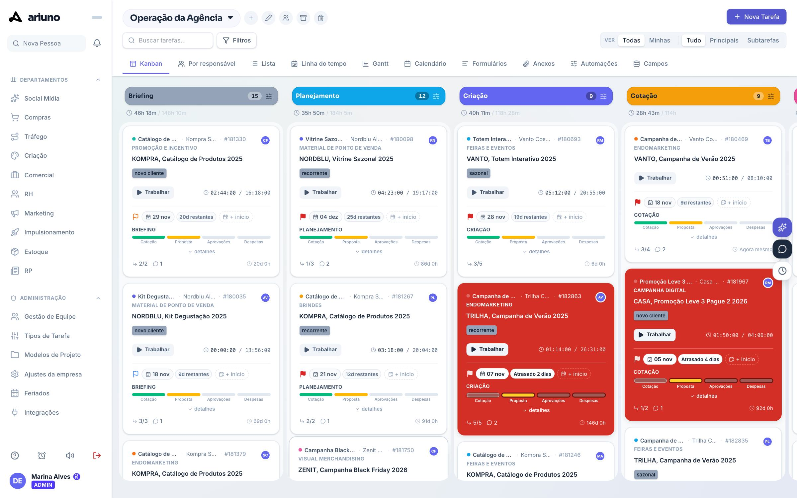

Sua empresa rodando no Ariuno em uma hora.
Passo a passo para configurar a conta e colocar o time para trabalhar.

Sete paradas, sessenta minutos. O relógio está no topo.
Como o Ariuno se organiza
Sete passos do admin
A rotina de quem usa
Cada departamento
Relatórios e regras
Plano e teste
Com a sua realidade
Vá direto ao que você precisa.
O índice também abre a qualquer momento no botão Índice, no topo, ou com a tecla M.
Entender
5 minutos- Como cliente, projeto e card se ligam
- Quem pode fazer o quê
Tudo no Ariuno gira em torno do card.
Quatro papéis. Cada um com o seu limite.
75 LAB
- Cria a empresa
- Abre novos assentos
- Envia os convites
Admin
- Configura regras, quadros e modelos
- Edita permissões do time
- Preenche vagas livres
- Não aumenta o número de assentos
Pessoa do time
- Trabalha nos seus cards
- Registra horas e comenta
- Faz pedidos em Solicitações
- Só vê as áreas liberadas
Cliente
- Acompanha o que é dele
- Responde por link
- Não ocupa assento pago
Configurar
15 minutos- Regras da empresa
- Time e permissões
- Clientes, quadros e modelos
A empresa fica pronta em sete passos, nesta ordem.
Ajustes
Regras e marca
2 minTime
Convidar pessoas
3 minPermissões
Quem vê o quê
3 minClientes
E os projetos
2 minQuadro
Etapas do fluxo
2 minModelos
O que se repete
2 minFechar
Feriados e contas
1 minComece pelas regras da casa.
Traga o time: o link já entra liberado.
Cada pessoa vê só o que precisa.
Clique nos númerosMude o acesso e veja o menu da pessoa mudar.
Cliente primeiro, projeto depois.
Clique nos númerosO quadro é o caminho do seu trabalho.
Não sabe quais etapas usar? Comece por uma destas.
Poucas etapas. De 4 a 7 resolvem quase tudo.
Uma pergunta por etapa. Com quem está o card agora?
Sempre com fim. Marque qual coluna é Concluído.
O que se repete vira modelo.
Feche com calendário e contas.
Clique nos númerosMarque o que já está feito na sua conta.
Dia a dia
20 minutos- A rotina em cinco movimentos
- Tarefa, subtarefa e checklist
- Criar, abrir e tocar um card
- Horas, pedidos e recados
O dia de trabalho cabe em cinco movimentos.
Abra
Sua pauta mostra o que é seu.
Dê o Play
O tempo entra no card.
Registre
Comente, marque e anexe no card.
Mova
A próxima etapa já vê.
Conclua
Entra nos relatórios.
Comece o dia pela sua pauta.
Criar um card leva menos de um minuto.
Tudo sobre o job mora no card.
Um job, três níveis: tarefa, subtarefa e checklist.
Onde isso entra: tarefa, subtarefa ou checklist?
Muitos cards de uma vez: suba uma planilha.
Cada linha vira um card. Veja onde ela entra.
Briefing
Planejamento
Criação
Play quando começa. Concluir quando termina.
Clique nos númerosFaça o caminho do card com o mouse.
Briefing
Kompra Supermercados
Criação
Aprovação
Concluído
O mesmo trabalho, seis formas de ver.
Hora que não foi registrada não existe.
Pediu? Virou Solicitação.
Clique nos númerosO recado de todos fica no Mural.
Áreas
6 minutos- Para que serve cada área
- Qual é o primeiro clique em cada uma
Cada área começa em um primeiro clique.
Gestão
6 minutos- O que olhar toda semana
- Regras que trabalham sozinhas
Três lugares para liderar sem perguntar.
Clique nos númerosToda regra tem três partes. Monte uma.
Quando
Só se
Então
Primeira semana
5 minutos e perguntas- O plano de cinco dias
- Um teste rápido
Em cinco dias o time inteiro está dentro.
- Ajustes da empresa
- Convites enviados
- Permissões conferidas
- Clientes e projetos
- Quadro e etapas
- Tipos de tarefa
- Três modelos principais
- Um card de teste de ponta a ponta
- Todo mundo com cards
- Play ligado
- Parar de usar a planilha
- Abrir os Relatórios
- Ver quem não registrou
- Ajustar o que travou
Quatro perguntas para fixar o essencial.
Tudo o que o Ariuno faz, tela por tela.
A reunião termina no teste rápido. Daqui em diante é consulta: cada assunto tem o passo a passo na tela real e, quando houver, um vídeo curto no botão verde do topo.
Empresa a fundo
Consulta- Cada regra dos Ajustes
- Marca, feriados, tipos e formulários
- Integrações com as redes
Cada assunto dos Ajustes, o que muda de verdade.
O Ariuno com a cara da sua empresa.
Clique nos númerosO que o admin cadastra uma vez só.
Clique nos númerosO cliente pede, o card nasce sozinho.
Os números das redes entram sozinhos.
Usuários e permissões
Consulta- Aprovar, bloquear e excluir
- Cada campo do usuário
- Quem pode o quê
O time inteiro, com os assentos à vista.
Clique nos númerosCada campo do usuário, de cima para baixo.
Quem pode o quê, papel por papel.
O que cada pessoa ajusta para si.
Clique nos númerosClientes e projetos
Consulta- Cadastro completo e contrato
- Relatório e repositório por link
- Entrega com aprovação do cliente
O cliente completo, com contrato e horas.
O cliente vê o trabalho sem precisar de login.
Clique nos númerosProjeto com orçamento, horas e prazos.
O cliente aprova pelo link, sem login.
Clique nos númerosQuadros e cards
Consulta- Quem vê cada quadro
- Filtros, colunas e ações em massa
- Automações e o card por inteiro
Os ícones do topo, um por um.
Clique nos númerosAche qualquer card em segundos.
Cada coluna com a sua regra.
Clique nos númerosMude dezenas de cards de uma vez.
Regras que trabalham sozinhas.
O que o card faz além do básico.
Clique nos númerosTempo e rotina
Consulta- Timesheet e Planner a fundo
- Reuniões, avisos e notificações
- Os 15 pedidos das Solicitações
Todas as horas, de quatro jeitos.
Planeje a semana arrastando.
Clique nos númerosA barra da direita e o sininho.
Quinze pedidos, quatro caminhos.
Recusar sempre pede motivo. Quem pediu edita ou cancela enquanto ninguém respondeu. Admin e diretoria recebem todas as áreas.
Departamentos
Consulta- Como liberar cada área
- Dez departamentos, aba por aba
- O que entra e sai por planilha
Dez áreas. Cada pessoa vê as suas.
Do primeiro contato ao negócio ganho.
Do orçamento à nota fiscal.
Clique nos númerosA campanha da ideia ao relatório final.
Pedidos, verba, leads e a marca.
O time com ficha e organograma.
Clique nos númerosDo pedido de folga à pesquisa de clima.
Anúncios e redes num painel só.
Catálogo, fornecedores e cotações.
Clique nos númerosA operação inteira em números.
A fila de quem produz.
Do roteiro ao post publicado.
Materiais por cliente, pautas e imprensa.
Clique nos númerosGestão a fundo
Consulta- Relatórios e extrator
- Meta contra realizado
- Arena Ariuno
Os números da empresa, sem planilha.
Missões, ranking e prêmios.
Vídeos e GIFs
24 vídeos curtos- Cada assunto em menos de um minuto
- GIFs para mandar no grupo do time
Cada assunto em menos de um minuto.
Configurar
Usuários
Quadros
Dia a dia
Gestão
Departamentos
Mande no grupo: o GIF ensina sozinho.
Agora é com o seu time.
Comece hoje pelo passo 1. Na sexta, o Ariuno já responde quem fez o quê, quando e por quanto tempo.

Quem te acompanha
75 LAB ESTRATÉGIA, DESIGN E PRODUÇÃO LTDA
CNPJ 55.470.982/0001-77
Onde estamos
CENU, Torre Norte, Av. das Nações Unidas, 12.901
Brooklin, São Paulo, SP, CEP 04578-910
Contato
(11) 98676-5634 · contato@75lab.com.br
75lab.com.br